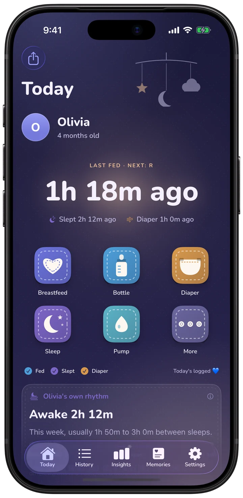
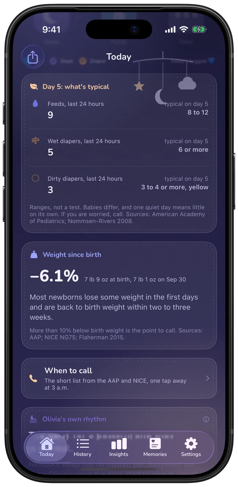
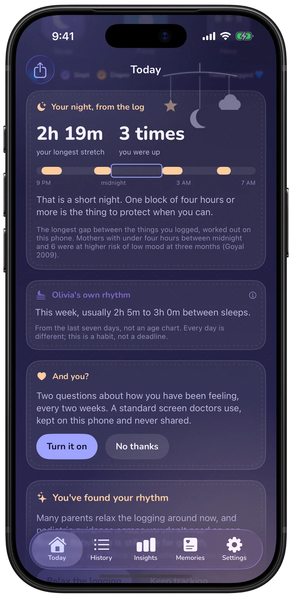
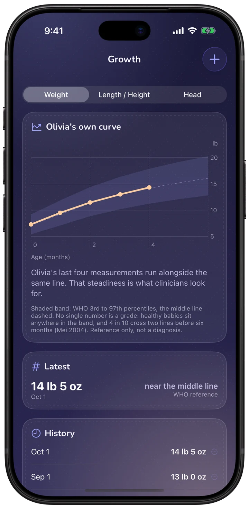

The one number you need, lit by a nightlight. Log with one thumb.
Free. No account. No ads.

BabyKeep is a baby tracker for iPhone, made for 3 AM. It shows the one number you need, and you can log with one thumb.
It keeps feeds, sleep, diapers, pumping and growth, with live timers on your Lock Screen. Every day you log stitches a patch into a quilt. Everything stays on your iPhone. There is no account, no cloud and no subscription.

The first two weeks
What's typical each day, beside what you logged. Ranges, never alarms.

Your night counts too
Your own longest stretch of sleep, worked out from the log you already keep.

Growth as a curve
The exact WHO tables and the trend, not a single number to worry over.
The details
Price
Free. Plus is optional: $9.99 once (US price). No subscription.
Checked against the App Store listing on November 10, 2026.
Support
Found a bug, or want something added? Email me at minieriapps+babykeep@gmail.com. I make BabyKeep on my own and read every message. Give me a couple of days to reply.
A quick note on health
BabyKeep is a personal tracker, not a medical device, and does not provide medical advice or diagnosis. Growth percentiles are an approximate general reference based on the WHO Child Growth Standards. Always consult your pediatrician with any questions about your child's health.
Privacy Policy
Last updated: October 1, 2026
BabyKeep does not collect, transmit, sell, or share any of your data. There is no account, no login, and no server.
What we collect
Nothing. The app has no analytics, no ads, no third-party SDKs, and makes no network requests. Because there is no backend, your data physically cannot reach us.
Where your data lives
Only on your iPhone, in Apple's on-device database. Delete the app and the data goes with it. Use the built-in CSV/PDF export to keep your own copy or share it with your pediatrician.
Photos
Any photo you attach to a milestone or profile stays on your device. Photo-library access is used only so you can pick those images.
Notifications
If enabled, reminders are scheduled locally on your device and are not sent through any server.
The optional check on you
If you turn it on, BabyKeep asks two standard questions about your mood every two weeks (the PHQ-2). Your answers are stored only on your iPhone, are left out of backups and exports, are never sent anywhere, and are erased when you turn the check off. BabyKeep is not a medical service and the result is a screen, not a diagnosis.
Face ID and the app lock
BabyKeep does not collect, access, store, or share face data. The optional app lock (in BabyKeep's Settings, off by default) uses Apple's LocalAuthentication framework: iOS performs the Face ID, Touch ID, or passcode check itself and tells BabyKeep only whether it succeeded. Your face data stays in your device's Secure Enclave under Apple's control; BabyKeep never receives it, so there is nothing for us to use, retain, disclose, or share with any third party. To withdraw permission, turn the lock off in BabyKeep's Settings, or switch off Face ID for BabyKeep in the iOS Settings app (Face ID & Passcode › Other Apps). Because BabyKeep holds no face data there is nothing for it to delete; your enrolled face is managed, and can be removed, only in iOS Settings › Face ID & Passcode.
Children's privacy
BabyKeep is a tool for parents and caregivers. Because the app collects no data and has no server, no information about you or your child is ever transmitted to anyone.